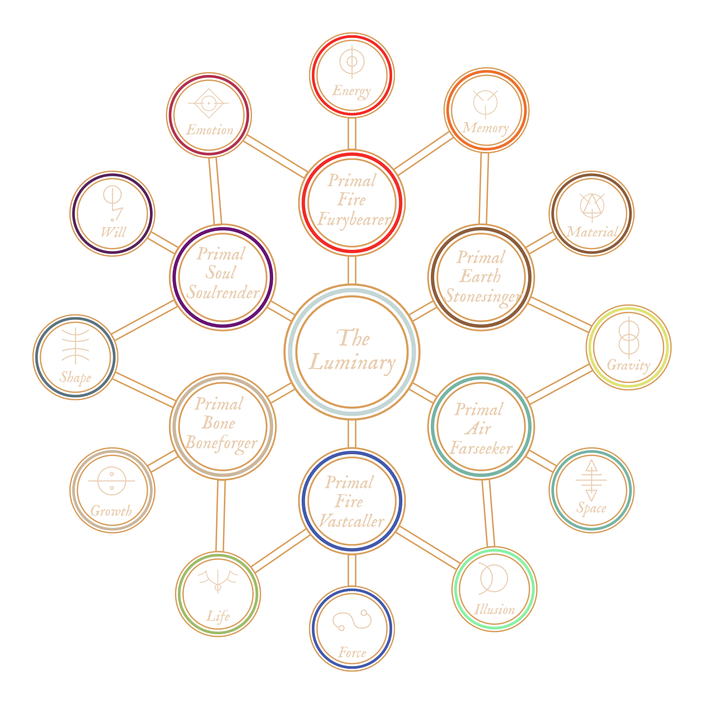

THE DARK BETWEEN
The Dark Between is a sort of "Steampunk", sort of "Gaslamp" fantasy setting that takes place on the planet of Naos. The heart of The Dark Between lies in the exploration of themes of gray morality authority versus autonomy, chaos and order, and the concept that the more we know about the Universe, the more we don't.
This setting has everything from unknowable elemental beings, powerful spellcasters, to genius inventors. Naos is a vast world, with many varying cultures and points of view—the technological wonders of Aljieudum, the stretching verdant hills of Savaar, and the militaristic might of Tharsis.
This setting has everything from unknowable elemental beings, powerful spellcasters, to genius inventors. Naos is a vast world, with many varying cultures and points of view—the technological wonders of Aljieudum, the stretching verdant hills of Savaar, and the militaristic might of Tharsis.
MAGIC IN NAOS

Luminous Magic
On Naos, Magic that is cast through The Luminary is called Luminous Magic. While The Thread gives all living creatures on Naos a connection to The Luminary, creating magic using The Thread is not so simple or easily done. Manifesting magical effects with Luminous Magic involves interfacing directly with the Luminary using the Thread and providing the celestial entity with a Conviction.
Acronists
Since wielding Luminous Magic is so difficult, it often (but not always) requires years of dedication and training to create anything meaningful with it. Those individuals that take the time to hone their Magic into something powerful are called Acronists.Convictions
A Conviction is a statement of belief provided to The Luminary, something that is not true of the world but that the Acronist firmly believes in their mind and soul is true. When Luminous Magic is cast on Naos, the wielder must form a Conviction strong enough to convince The Luminary that whatever they want to happen is reality, thus manifesting their belief into the physical world. If a Conviction is strong enough, it can become a Fixed Truth.Fixed Truths
A Fixed Truth is a Conviction created by Luminous Magic so powerful that rather than manifesting a temporary change to reality, the Conviction becomes a part of reality permanately. Even when the Acronist stops the Conviction, whatever the result reamins as the new truth of reality.The Law of Diametric Truth
When manifesting Convictions, it is the Acronist's belief, or will, that convinces the Luminary that reality behaves in a certain way. The greater the discripancy between the Acronist's Conviction and the Cornerstone, the greater the potential Backlash.Runes
Some cultures on Naos believe that certain symbols or runes are tied to the different aspects of Primal Spirits and Luminous Magic. The reality is that while these symbols don't intrisincally have any power over certain aspects, it has been found that using runes can aid in the strength of the Conviction formed while casting luminous magic. Runes can also provide a convenient way for Acronists to read and understand certain Fixed Truths that have been laid upon a particular place or item, so are used as a form of common communication.The Primal Spirits
The Primal Spirits are comprised of six powerful beings, created from the The Luminary. The six primal spirits are Air, Water, Earth, Fire, Bone, and Soul.
Primal Spirits and Luminous Magic
While a particularly talented and rare Acronist may be able to manifest Convictions with a direct link to The Luminary, most do so with the aid of a Primal Spirit. Not only do Primal Spirits allow an Acronist to manifest Convictions of greater magnitude, they also rebuff potential Backlash.The Exchange
In order for an Acronist to leverage a Primal Spirit in their Convictions, they must complete an Exchange. An Exchange can take many different forms, depending on both the particular Spirit involved and the specific cultural practices of the Acronist. In some cultures, such as the in Kingdom of Lashana, their worship of the Primal Fire gave their most devout worshippers control over the Aspects of Fire.Typically, exchanges made with any of the Spirits are more simple, either involving a Summoning and capture of part of the Primal Spirit, or consistent worship of a particular Spirit. In rare cases, a Primal Spirit may reach into the physical realm and choose a Scion, creating a pact with a mortal at birth, as is the case with Elemental Scions and Shifters.
The exception, however, is the Primal Soul. The Primal Soul, considered more sentient and aware than the other Spirits, often requires a bargain to be struck with the Acronist. Since the Corruption of the Primal Soul, exchanges with the Primal Soul are mostly frowned upon, and in some places, illegal.
The Aspects
Each Primal Spirit is tethered to three aspects, each a core facet of the Primal Spirit. Each Primal Spirit shares two aspects with another Spirit. Approaches
In modern Universities, there are six approaches of varying levels taught for forming Convictions from the Aspects. Each Heirarch requires an increasing degree of skill and training from the Acronist. 1st Heirarch | AbecarNovus - Perception, knowing, revealing
Regus - Control, Manipulation
2nd Heirarch | Gnostis
Vertus - Transformation, alters the natural state of being
Armus - Resistance, bolsters defences against a specific aspect
3rd Heirarch | Kyros
Parus - Creation from nothing
Demus - Destruction, decay, disintegrate, or diminish
Origins
In the beginnings of the world, when humans huddled around fires and struggled to survive, they often looked to beings beyond dieties with power outside of normal comprehension, either to worship or fear or to simply explain how the world around them worked.In a sense, early humans saw these divine concepts as Universal Movers, beings that encompassed various aspects of their lives. In their belief and worship, humanity as a whole catalyzed a collective Conviction so strong that it these beings were willed into existence. Overtime, primordial beings were formed from the faith that existed within humanity. The Convictions that created these beings was so strong that it became a Fixed Truth in reality, allowing the spirits to continue to exist even as humanity evolved.

Sentience
It is unknown to the denizens of Naos whether the Primal Spirits are sentient, or simply forces of nature. In truth, the answer is more complex than that. The Primal Spirits themselves are far more complex constructs, both incomprehensible forces and, for lack of a better term, minds. They work as parts of a whole, and there are many instances of physical manifestations of the Primal Spirits coming into existence in the physical world, either pulled by a mortal that lives in it, or simply bubbled into existence by random chance. These manifestations can take many forms, both benign and dangerous. Many have been worshiped and feared as minor gods or monsters in their own right.In some ways, the Primal Spirits have a “will” of their own, trying to shape the world in their image however they see fit. But they are also vastly incomprehensible, and often their influence on the world is met with fear and awe.
Intrinsic Values
Since the Primal Spirits were created by and for Humans, each of the spirits is also intrisically tied to certain values. These values influence how the Primal Spirits manifest in the world and their influence on it.The Primal Earth is tied to the values of Balance, Strength, and Neutrality.
The Primal Air is tied to the values of Freedom, Self, and Honesty.
The Primal Water is tied to the values of Change, Adaption, and Fear.
The Primal Fire is tied to the values of Passion, Life, and Fury.
The Primal Bone is tied to the values of Substance, Pain, and Death.
The Primal Soul, prior to corruption, was tied to the values of Thought, Morality, and Virtue.
In the present, the Primal Soul is tied to the values of Corruption, Manipulation, and Ego.
Facsimilies of Reality
It is important to note that while the Spirits embody aspects of humanity, they are not true embodiments of what they represent. When they were created, that may of been true, but the Spirits, as semi-conscious immortal beings, have the potential to grow and shift over time of their own accord, and how the world indirectly influences them. The Elemental Spirits are most resistant to change—Rivers will always change the land, and the ocean will always strike fear into those who witness its vastness, but Bone and Soul are more subject to interpretation and change. Soul especially.Corruption of the Primal Soul
Of the spirits, Soul was always the most concious and aware. While the other Spirits were more animalistic in nature, Soul often manifests with more sentience. Over time, however, as humanity and civilization became more complex, and the understanding of what it means to be good or evil did as well, the Primal Soul becamed twisted, warping into a representation of the darkest corners of the human soul. While the Primal Soul is merely a reflection, in a way, and cannot be truly evil, this shift led many in the world of Naos to fear the Primal Soul, and treat it as such. For The Argent, The Primal Soul is seen as the personification of Evil, the wickedness of the heart should The Luminary not be followed.
In the Modern Age
In the modern age of Naos, most civilizations treat the Spirits as they are, powerful and primal beings that are vast and potentially dangerous, but not gods. Some civilations, however, still worship one or more of the spirits as dieites. Some Shifters worship the Primal Spirit of Bone as a sort of god-like figure. Pockets of Msanti culture worship Primal Water. There are various human cultures that worship the different elemental spirits in more ways than one.Creation of New Spirits
While it is technically feasible for new spirits to be created, the largely varying cultures and beliefs that make up Naos in the modern age make in very unlikely that new spirits would come about. The rise of logic, reason, and science too make such a mass Conviction possible, at least without a deliberate and coordinated effort. The Primal Spirits were a certainly a unique occurance, and their creation the result of a perfect storm.Scions
While extremely rare, it is possible for human-spirit hybrids to be born into the world, known as Elemental Scions, or, in even rarer cases, Shifters. Scions are always born from a normal human parentage, and appear mostly human with some unique characteristics. Scions are simply born with an innate connection link to one of the Spirits, and are generally granted abilities based on their Spirit. The only Spirit that does not produce Scions is the Primal Soul.The Faded
They are quite depressing, aren't they? I had a Great Uncle that was a Fade. Strangest thing—there wasn't a hint of color in his eyes. Other than that you would never have known. He didn't do much, just sat around skulking most of the time. Though perhaps he was just a boring person, even before his thread was severed.
—Mekhag Ardashessian, Memoirs of the Luminancer
 Fades—or, The Faded—whether willingly or forcibly, have had their Thread to Magic was severed, rendering them unable to use Magic or be touched by it in any way.
Fades—or, The Faded—whether willingly or forcibly, have had their Thread to Magic was severed, rendering them unable to use Magic or be touched by it in any way.
In some cases, Fades tend to feel less emotion than other humans. Without conscious effort, they find themselves drawn towards quiet places and distance themselves from others. On the whole, however, Fades retain much of their original personality from before they where changed. Although their soul, their spiritual connection to the source of Magic has been severed, their human qualities remain.
Some Fades strive to overcome their lack of Magic by becoming experts in their field. Skilled blacksmiths, mathematicians, historians, warriors, engineers, and more. Their drive to make the most out of what they have and overcome their shortcomings gives them extraordinary determination.
The Lightless
Foul, despicable creatures. To commit such a willing sin to unmake your soul and bind it to such a odious being is reprehensible. Worse, even than being untethered entirely. To be shackled to the corrupt Soul is to commit the highest of infedelities to the Luminary. It is a mockery of the Faith.
—Kanada Badakar, Exalted Vencus of the Argent
 Lightless are humans who have chosen to forgo their tether to the Luminary and instead bind themselves to the corrupt Primal Spirit of Soul. They go by many other names—Karaatmar, Darklings, Demons.
Lightless are humans who have chosen to forgo their tether to the Luminary and instead bind themselves to the corrupt Primal Spirit of Soul. They go by many other names—Karaatmar, Darklings, Demons.
Long ago, the Primal Spirit of Soul became twisted and defiled, and malformed into a new being. This new Corrupt Soul, still tethered to The Luminary, grew into a new symbol within the Argentia, an emblem of wickedness and all that is unholy within humanity. To many, the Lightless are a living blasphemy against the Luminary. Unlike the The Faded, who are simply untethered completely—and generally not by choice—the Lightless are untethered from the Luminary and bound to the corrupt soul instead. This pact gives the Lightless inhuman abilities—heightened senses, the ability to read emotions, a longer lifespan, and access to Magics that would otherwise be unreachable to mere humans.
Human Variants
The Deep Dwellers
The figure in the tarnished metal suit loomed over Gael. It was impossible to discern any features through the scratched and dirty glass of the viewport in the helmet, but he could only imagine a contorted mass of tentacles, eyes, and mottled grey flesh beneath the placid mask. Without warning it turned and launched it's impossible mass over the side of the ship and into the depths below.
—Gael Cairright, Of The Sea and Below
 The Msanti, or the Dwellers in the Deep, as they are otherwise known, are humanoid creatures that live in the depths of the ocean. It is said that long ago, they were banished to the sea after an indiscretion with the Primal Spirit of Water.
The Msanti, or the Dwellers in the Deep, as they are otherwise known, are humanoid creatures that live in the depths of the ocean. It is said that long ago, they were banished to the sea after an indiscretion with the Primal Spirit of Water.
Immense Pressure
The Msanti live in the darkest depths of the ocean, where the pressure of water would crush land lopers. While they rarely leave their solitary existence, the more adventurous Deep Dwellers don pressurized suits that allow them to ascend to the surface and explore the overworld. These suits are made to be self-sustaining, keeping the Deep Dwellers that use them in water and under enough pressure to retain their form that would otherwise collapse while on the surface. The suits are fitted with mirror-like visors—most Deep Dwellers have extraordinarily sensitive eyes to live in the near-dark of the fathoms.Life at the Bottom
Although Deep Dwellers live where very little light exists, natural geothermal vents along the ocean floor provide a natural source of energy to allow their civilization to thrive. Deep Dweller civilizations are wide and varied, from vast cultivated fields of seaweed, to small villages and large cities glowing with bioluminescent light. They have harnessed the geothermal power available to them to acheive technological prowess, creating mechanical feats that can operate even at the bottom of the ocean. With the use of hydrothermal vents and magic, the Msanti are known for their excellent metallurgy. Land dwellers often travel to Msanti trading bazaars found in shallower water in order to trade.The Deep Dwellers themselves represent a wide array of life. Some are nearly humanoid, the only differences being larger eyes to take in more light, and a lack of pigment to their skin. Others, however, can be more otherwordly, featuring an array of tentacles, teeth, bioluminescent fins, exoskeletons, and more. Nearly all Deep Dwellers have retained their bipedal form, though, as it allows them to walk along the sea floor and travel on land.
Communication is Key
Although many Deep Dwellers tend to prefer solitary life, their societal advancement necessitated collaboration. Verbal speech an impossibility underwater, they have a means to communicate telepathically between themselves and other sentient creatures.
Cursed Past
While the exact origins of the Deep Dwellers is unclear, it is mostly agreed upon that they were once human, long ago. Their ancestors vied for more power and tried to capture and enslave the primal spirit of water. In their failure, they were banished from land by the spirit, cursing them to live at the bottom of the sea. At first, the deep dwellers lived alone in darkness. Eventually, though, they developed into a flourshing society beneath the waves.While many Deep Dwellers are contented with their new existence, some Deep Dwellers long to return to the surface permenately, in an event known as The Ascension. They believe that if the Primal Spirit was the one to banish them, it has the power to return them to human form and allow them to rejoin the surface lopers. Some Deep Dwellers go on great pilgramages across the land and sea in search of a way to appease the spirit and begin The Ascension.
Shifters
One must not ask whether they have encountered a Shifter before, but when. They live among us. They could be your best friend, your neighbor, your cousin. They are completely imperceptible. When they shift, they do it completely and wholly. Governments have been toppled, Empires overthrown, because of them.
—Temren Sarigul, History of the Dawn
Shifters are the offspring of humans touched by the Primal Spirit of Bone at birth. They are granted the ability to shapeshift into any creature.
Elemental Scions
The first thing you notice about them is their eyes. The iris seems to take on a life of it’s own, shifting an shimmering as if there’s something there, like the glint of fire or the crashing waves of the sea. The next, of course, is the hair.
—Samat Nazerov, The Color of the Spirits
Elemental Scions are offspring of humans touched by one of the four Elemental Primal Spirits.